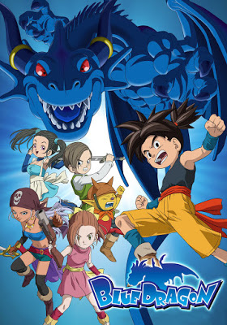

Blue Dragon ศึกอภินิหารมังกรสีน้ำเงิน ภาค 1 พากย์ไทย
ในหมู่บ้านแห่งหนึ่ง มีเด็กที่ชื่อ ชูใฝ่ฝันอยากเป็นไนท์มาสเตอร์เพื่อปกป้องหมู่บ้านให้รอดพ้นจากพวกคนชั่ว เขาได้พบกับโซระที่สามารถใช้ “เงา”
ต่อสู้ได้ จึงคิดว่าโซระเป็นไนท์มาสเตอร์ เลยขอโซระเป็นลูกศิษย์ แต่โซระกลับปฏิเสธ! เวลานั้นเอง กองกำลังของเนเนะ ราชาแห่งความมืดก็บุกเข้าโจมตีหมู่บ้านของชู!บลูดราก้อนซึ่งเป็นพลังเงาของชูได้ปรากฏตัวขึ้น
ทว่าชูกลับไม่สามารถบังคับพลังนี้ได้! โซระได้เล่าเรื่องราวต่างๆทั้งเรื่องสงครามระหว่างแสงสว่างกับความมืด และนักรบแห่งแสงสว่างทั้ง 7 แล้วก็ชักชวนให้ชูออกเดินทางด้วยกัน